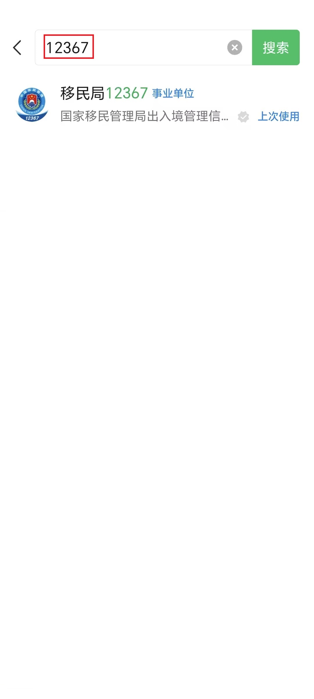
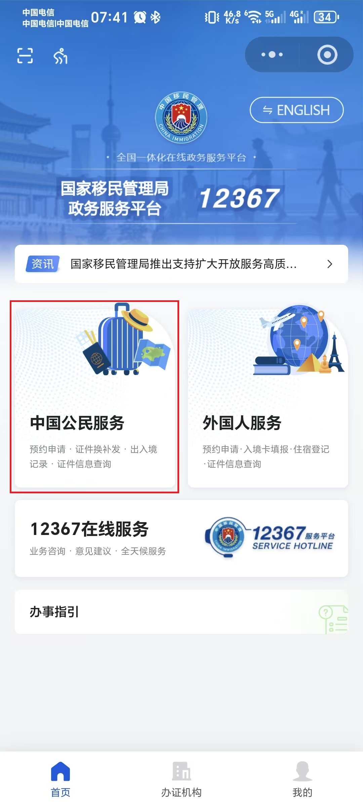
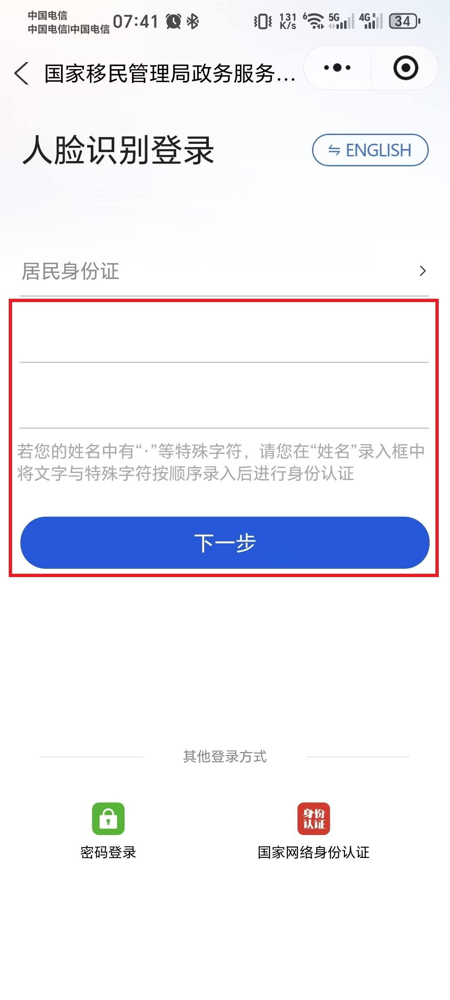
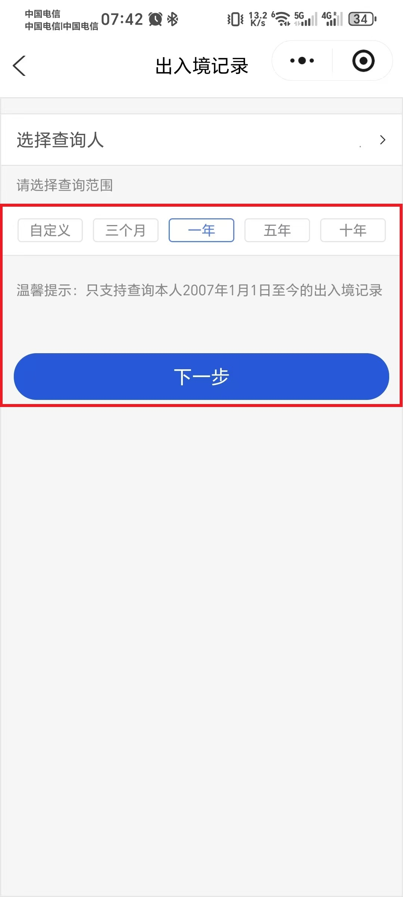
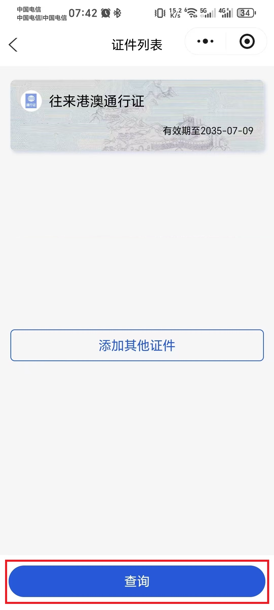
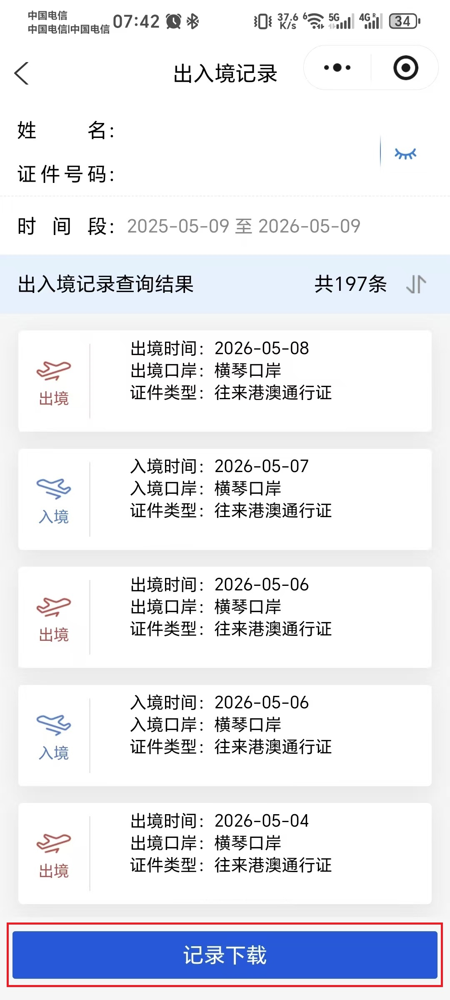
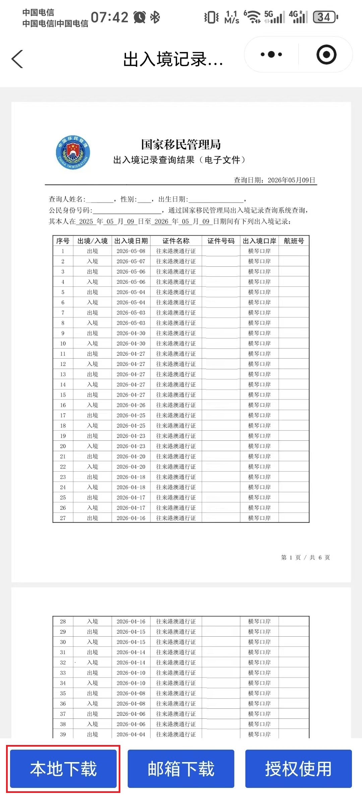
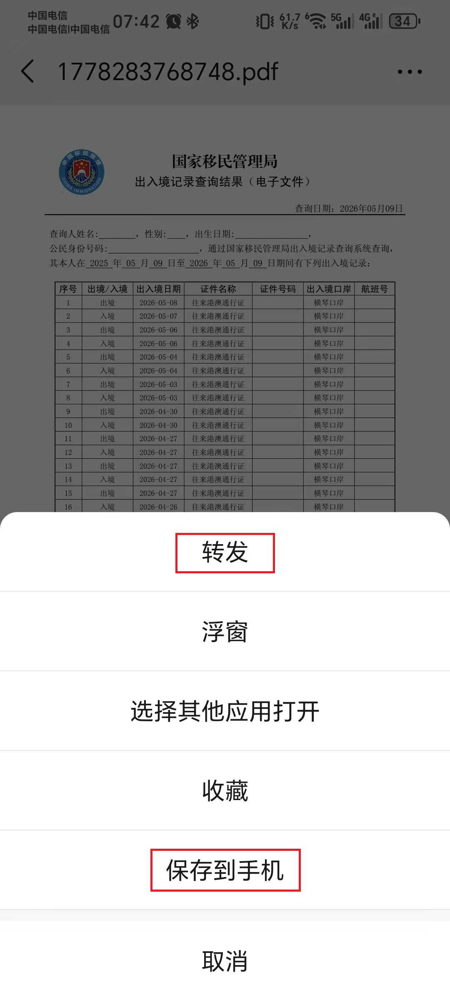
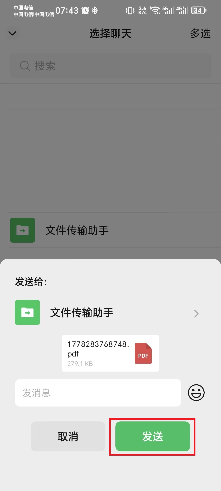

港澳逗留有效天数计算器
点击展开详细计算规则
留服认证要求一年制90天，二年制180天，四年制365天，具体还要结合课表和当地假期判断。
本计算器计算规则说明：
1. 有效离境天数 = 自然离境天数 减去 各规则扣除天数
2. 扣除天数包括：周末、政府公众假期、补假日、学校寒暑假（暂时仅录入了澳门寒暑假）
3. 半日假按 0.5 天扣除（默认不勾选）
4. 必须从开学日期开始累计，开学前不计入逗留时长
5. 解析PDF时会自动识别口岸，无法识别的口岸会被标记为待复核，您需要根据真实行程手动选择是计入澳门还是香港，或者不计入（如果是误识别的无效记录）。如果有多个连续记录的口岸都无法识别，您也可以批量选择全部计入澳门或香港
6. 如果您发现计算结果有误，或者有任何关于使用的建议和意见，欢迎点击计算结果区域的反馈按钮发送反馈，并在小红书留言，我们会第一时间修复并持续优化改进
00
如何下载出入境记录PDF？ 点击展开
1
微信搜索「移民局12367」小程序

2
选择「中国公民服务」

3
选择「出入境记录查询」
4
人脸识别登录

5
选"一年"或"五年"，点击下一步,注意必须包含全部记录

6
点击"查询"

7
点击"记录下载"

8
点击"本地下载"，下不了就选邮箱

9
"保存到手机"

10
或者发给文件传输助手到电脑接收

01
导入PDF
拖入国家移民局12367小程序下载的出入境记录PDF
选择文件
建议使用 Chrome、Edge 或 Safari浏览器。PDF不会上传，纯本地解析。
尚未选择文件
02
解析文本展示区（可粘贴或手动修改）
准备就绪。请选择 PDF 或粘贴文本。